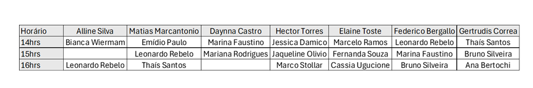

Welcome to the F2F Meeting – June 2025!
We are thrilled to welcome you to São José dos Campos for another CPP Latam Leadership gathering. This will be a week of genuine connections, shared learning, recognitions, and a review of the priorities already defined — with space to realign as a team if needed.
We’ve crafted a special schedule filled with relevant content, opportunities for collaboration and recognition, and activities that reinforce our culture and mutual trust.
Please explore the available materials and actively contribute to each session with your ideas and experiences. More session details will be updated over the next week!
🕒 Our official schedule starts on Tuesday. However, for those arriving and present at the site on Monday, we will use the time to connect with the site team and have development conversations. Details of the schedule are in the table below.
